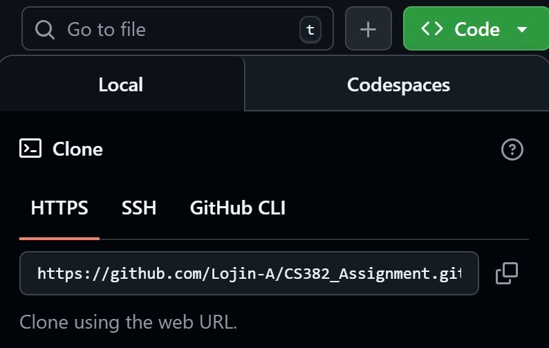

Preparing the Local Environment
Connecting GitHub with Your Coding Environment
Shahad Alromi
What is Cloning?
- Cloning = downloading a copy of the repository to your local machine
- Work on files locally using your preferred IDE/editor
- HTTPS method (simple and beginner-friendly)
- Creates a linked copy between GitHub and your computer
Cloning Using HTTPS
- Go to your repository on GitHub
- Click the green "Code" button
- Copy the HTTPS URL 
- Open terminal and navigate to desired folder
- Run:
git clone [URL]
Typical Web Project Structure
my-web-project/
├── index.html (Homepage)
├── style.css (Styling)
├── script.js (JavaScript)
├── images/ (Image folder)
├── README.md (Documentation)
└── .gitignore (Files to ignore)
├── index.html (Homepage)
├── style.css (Styling)
├── script.js (JavaScript)
├── images/ (Image folder)
├── README.md (Documentation)
└── .gitignore (Files to ignore)
- Keep files organized with clear naming
- Start simple, expand as needed
Creating Your First Files
Create basic web files in your local project folder:
index.html(main page)style.css(styling)index.php(for PHP projects)
<!DOCTYPE html>
<html lang="en">
<head>
<meta charset="UTF-8">
<title>My Web Project</title>
</head>
<body>
<h1>Welcome to My Project</h1>
</body>
</html>
<html lang="en">
<head>
<meta charset="UTF-8">
<title>My Web Project</title>
</head>
<body>
<h1>Welcome to My Project</h1>
</body>
</html>
1 / 5